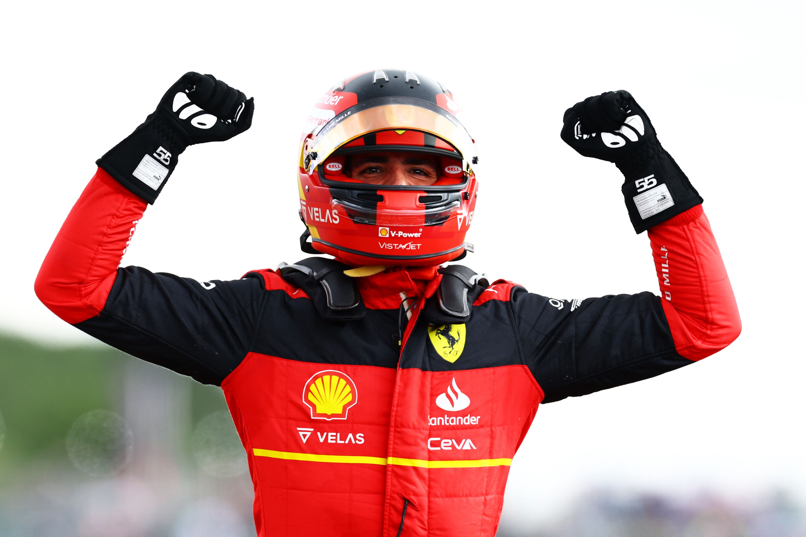
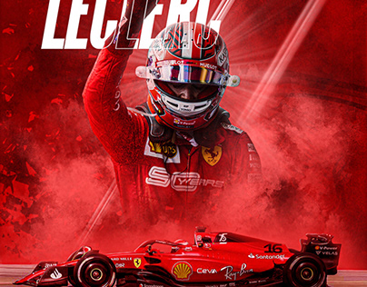

Ferrari
Acceuil
Galerie
Moments Forts
Succès
Histoire
Constructeurs
L'avenir
Voici les stats de Charles Leclerc & Carlos
Charles Marc Hervé Perceval Leclerc
nee le 16 octobre 1997 - Monaco - 25 ans
Nationalite : Monegaste
premier grand prix :Australie 2018
Dernier Grand Prix :Abu Dhabi 2022
Meilleur resultat :1er
Meilleur position de depart :1er
CARLOS SAINZ
nom: Carlos Saínz Vázquez de Castro
Date: 1 september 1994 - Madrid - 28 ans
Nationalite: Espagne
Premier Grand Prix: Australie 2015
Dernier Grand Prix: Abu Dhabi 2022
Meilleur Resultat : 1 er
Meilleur position de depart: 1er
 